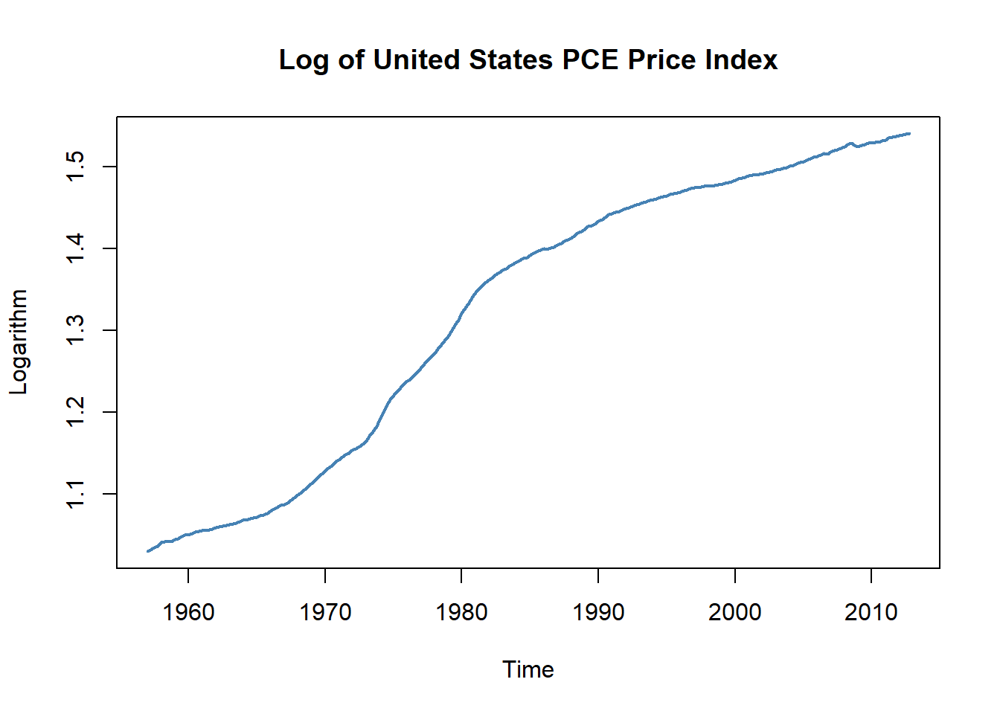

16.4 Volatility Clustering and Autoregressive Conditional Heteroskedasticity
In particular financial time series often exhibit a behaviour that is known as volatility clustering: the volatility changes over time but its degree shows a tendency to persist i.e. there are periods of low volatility and some where volatility is high. Econometricians call this the conditional heteroskedasticity. Conditional heteroskedasticity is an intersting property because it can be exploited for forecasting the variance of future periods. A good forecast of a series’ variance allows to quantify uncertainty (for example by computing accrurate forecast confidence intervals) which is especially important when it is hard to come up with a good prediction of future realisations (see section 14.4).
As an example, we consider daily changes in the Whilshire 5000 stock index. The data is available for download at the Federal Reserve Economic data Base. For consistency with the book we download data from 1989-29-12 to 2013-12-31 (choosing this somewhat larger time span is necessary since later on we will be working with daily changes of the series).
The following code chunk shows how to format the data accordingly and how to reproduce Figure 16.3 of the book.
# import data on Wilshire 5000 index
W5000 <- read.csv2("data/Wilshire5000.csv", stringsAsFactors = F, header = T, sep = ",", na.strings = ".")
# convert columns
W5000$DATE <- as.Date(W5000$DATE)
W5000$WILL5000INDFC <- as.numeric(W5000$WILL5000INDFC)
# remove NAs
W5000 <- na.omit(W5000)
# daily percentage changes
W5000_PC <- data.frame("Date" = W5000$DATE, "Value" = as.numeric(Delt(W5000$WILL5000INDFC)*100))
W5000_PC <- na.omit(W5000_PC)# plot percentage changes
plot(W5000_PC,
ylab = "Percent",
main = "Daily Percentage Changes in the Wilshire Index",
type="l", col = "steelblue", lwd = 0.5)
abline(0,0)
The level of the series of daily percentage changes in the Wilshire Index seems to randomly fluctuate near zero, meaning there is little amount autocorrelation so that it is difficult to predict future outcomes using e.g. an autoregressive model. However there is visual evidence that the series exhibits conditional heteroskedasticity since we observe volatility clustering and for some applications it is useful to measure and forecast these patterns. This can be done using models which assume that the volatility can be described by an autoregressive processe.
ARCH and GARCH Models
Consider \[Y_t = \beta_0 + \beta_1 Y_{t-1} + \gamma_1 X_{t-1} + u_t\], a simple ADL(\(1\),\(1\)) regression model. The econometrician Robert Engle (1982) proposed to model \(\sigma^2_t\), the variance of the normally distributed error \(u_t\) by an order \(p\) distributive lag model
\[\begin{align} \sigma^2_t = \alpha_0 + \alpha_1 u_{t-1}^2 + \alpha_2 u_{t-2}^2 + \dots + \alpha_p u_{t-p}^2, \tag{16.1} \end{align}\]which is called the autoregressive conditional heteroskedasticity (ARCH) model of order \(p\), or short ARCH(\(p\)).15 The general idea is apparent from the model structure: positive coefficients \(\alpha_0,\alpha_1,\dots,\alpha_p\) imply that recent large squared errors lead to a large variance, and thus large squared errors, in the current period.
The generalized ARCH (GARCH) model, developed by Tim Bollerslev (1986) is an extension of the ARCH model where \(\sigma^2_t\) is allowed to depend on its on lags and lags of the squared error term. The GARCH(\(p\),\(q\)) model is given by
\[\begin{align} \sigma^2_t = \alpha_0 + \alpha_1 u_{t-1}^2 + \alpha_2 u_{t-2}^2 + \dots + \alpha_p u_{t-p}^2 + \phi_1 \sigma^2_{t-1} + \dots + \phi_p \sigma^2_{t-q}. \tag{16.2} \end{align}\]The GARCH model is an ADL(\(p\),\(q\)) model and thus can provide more parsimonious parameterizations than an ARCH model (see the discussion in Appendix 15.2 of the book).
Application to Stock Price Volatility
Maximum likelihood estimates of ARCH and GARCH models are efficient and have normal distributions in large samples such that the usual methods for conducting inference about the unknown parameters can be applied. The R package fGARCh is a collection of function for analyzing and modelling the heteroskedastic behaviour in time series models. In the following application we reproduce the results presented in Chapter 16.5 of the book by means of the function garchFit(). This function is somewhat more sophisticated. It allows for different specifications of the optimization procedure, different error distributions and much more (use ?GarchFit for a detailed description of the arguments), in particular, the reported standard errors are robust.
where \(R_t\) are is the percentage change in period \(t\), \(\beta_1\), \(\alpha_0\), \(\alpha_1\) and \(\phi_1\) are unknown coefficients and \(u_t\) and \(\nu_t\) are error terms with conditional mean of zero. We do not include any lagged predictors in the model of \(R_t\) because the daily changes in the Wilshire 5000 index reflect daily stock returns wich are essentially unpredictable. Note that \(u_t\) is assumed to be normally distributed and the variance \(\sigma^2_t\) depends on \(t\) as it follows the GARCH(\(1\),\(1\)) recursion (16.3).
It is straightforward to estimate this model using garchFit().
# estimate GARCH(1,1) model of daily percentage changes
GARCH_Wilshire <- garchFit(data = W5000_PC$Value, trace = F)so the coefficient on \(u_{t-1}^2\) and \(\sigma^2_{t-1}\) are statistically significant at any common level of significance. One can show that the persistence of movements in \(\sigma^2_t\) is determined by the sum of both coefficients which is \(0.99\) here. This indicates that movements in the conditional variance are highly persistent, implying long-lasting periods of high volatility which is consistent with the visual evidence for volatility clustering presented above.
The estimated conditional variance \(\widehat{\sigma}^2_t\) can be computed by plugging the residuals from (16.4) into equation (16.5). This is performed automatically by garchFit() so to obtain a vector of the estimated conditional standard deviations all we have to do is to read out the values from GARCH_Wilshire by appending @sigma.t.
Using the vector containing the \(\widehat{\sigma}_t\) we plot bands of \(\pm\) one conditional standard deviation along with deviations of the series of daily percentage changes in the Wilshire 5000 index from its mean. The following code chunk reproduces Figure 16.4 of the book.
# compute deviations of the percentage changes from their mean
dev_mean_W5000_PC <- W5000_PC$Value - GARCH_Wilshire@fit$coef[1]
# plot deviation of percentage changes from mean
plot(W5000_PC$Date, dev_mean_W5000_PC,
type = "l",
col = "steelblue",
ylab = "Percent",
xlab = "Date",
main = "Estimated Bands of +- One Conditional Standard Deviation",
lwd = 0.2)
abline(0, 0)
# add GARCH(1,1) confidence bands (one standard deviation) to the plot
lines(W5000_PC$Date, GARCH_Wilshire@fit$coef[1] + GARCH_Wilshire@sigma.t, col = "darkred", lwd = 0.5)
lines(W5000_PC$Date, GARCH_Wilshire@fit$coef[1] - GARCH_Wilshire@sigma.t, col = "darkred", lwd = 0.5)
We see that the bands of estimated conditional standard deviation describe the observed heteroskedasticity in the series of daily changes of the Wilshire 5000 index quite well and are useful for quantifying time-varying volatility and the emerging risk for investors holding stocks summarized by the index. This estimated GARCH model may also be used to produce forecast intervals whose widths depend on the volatility of the most recent regression residuals.
Although we introduce the ARCH model as a component in an ADL(\(1\),\(1\)) model (a model of the conditional error variances), it can be used for modelling the conditional zero-mean error term of any time series model.↩